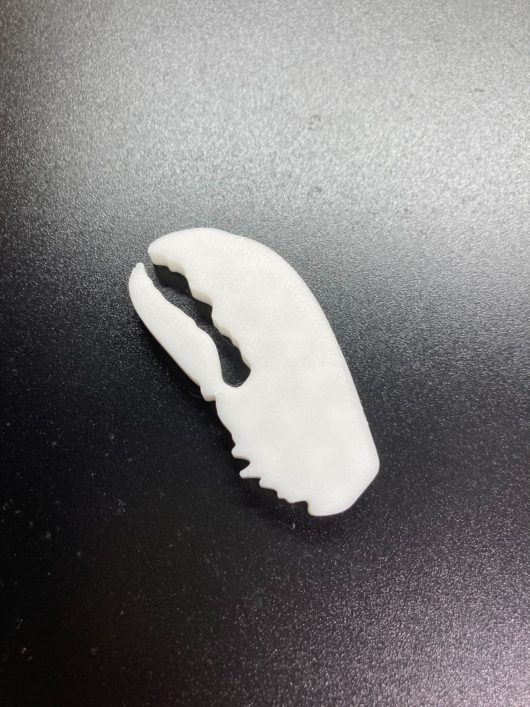
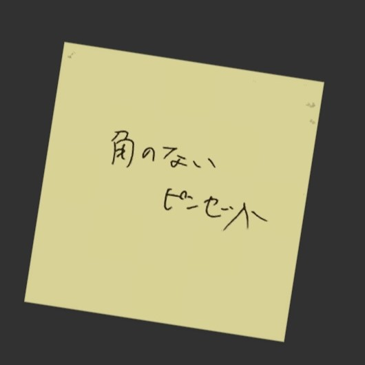
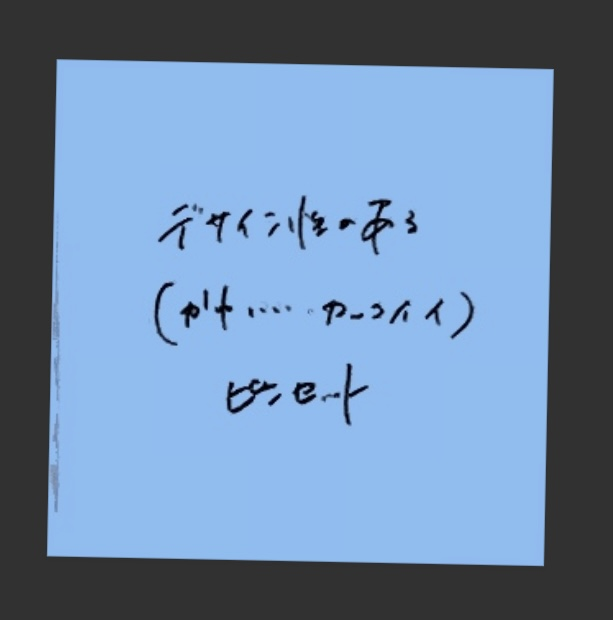
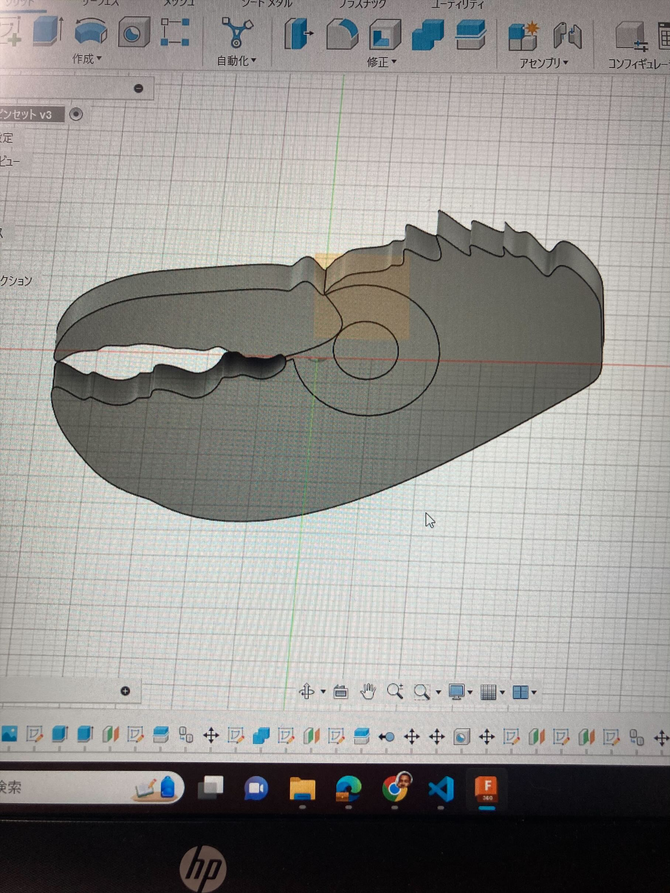
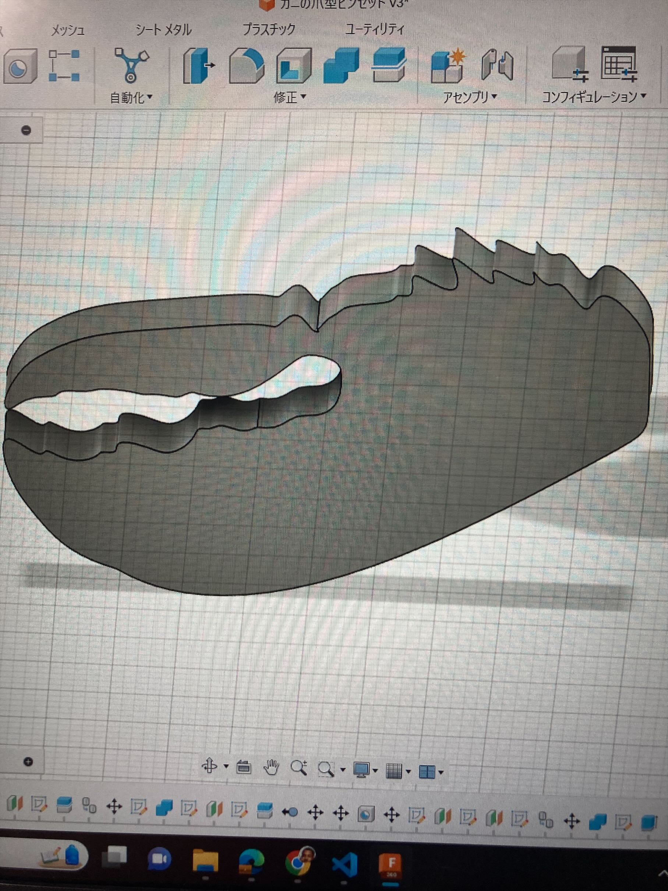
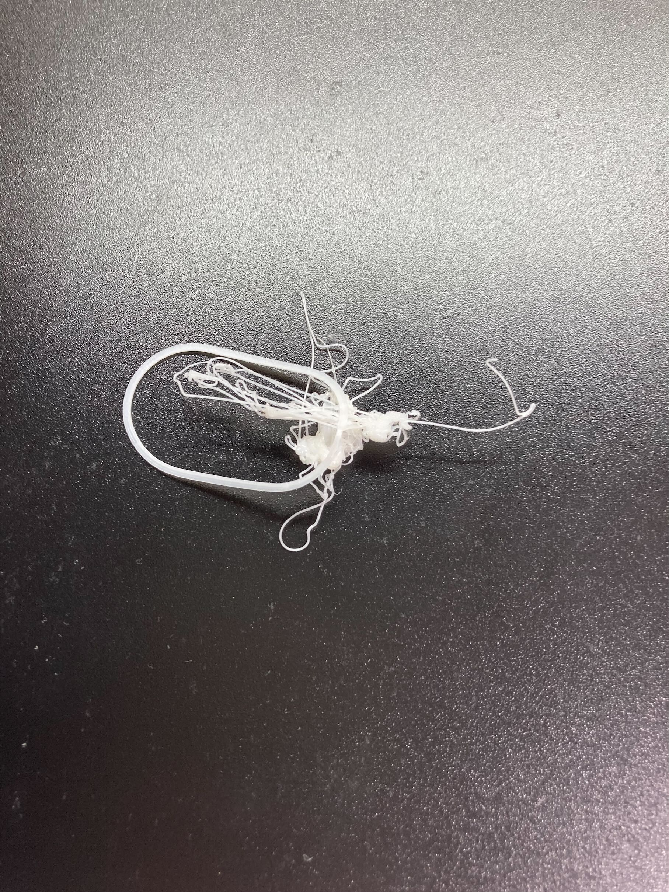

3Dプリンティング
今回は、3Dプリンタを使ってロブスターの爪型のピンセットを作ってみました！
こちらが完成品になります。

【製作プロセス】
まず、班でポストイットに書いたアイデアを見返しました。

この二つのアイデアから、カニ爪型のピンセットを考案しました。
次にfusion360でプログラムしてみました。

最初は上のように、可動部分を組み合わせて開閉できるようにするつもりでした。しかし、「樹脂なので分けて作る必要がない」と先輩に言われたため、下のように作りました。

【実際に3Dプリンタでプリント】
一回目は下のようになってしまいました。ただのカスです。平面に対して少しだけ斜めに設計してしまったことが原因であると考えられます。

二回目でやっと作れました！
【まとめ】
・今回の課題を通して、自分のイメージをすぐ形にできるんだということを実感することができました。
・樹脂がそこそこ固いことを知ったので、そこにも考慮しながら設計していきたいです。